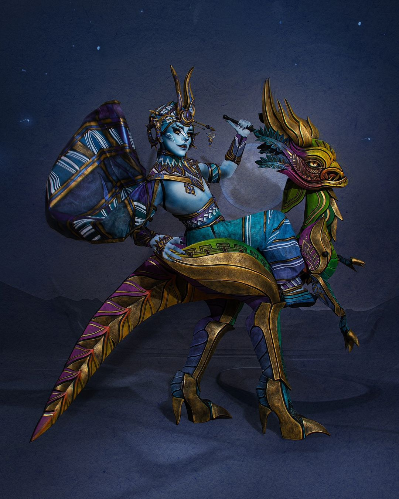

Proyecto 01: Escultura Textil y Alta Fantasía - "La Máxima Quimera"
Categoría: Dirección de Arte / Diseño de Indumentaria Avant-Garde
Una exploración radical de la identidad mitológica a través del diseño de moda experimental y la caracterización conceptual. Esta pieza combina técnicas avanzadas de modelado estructural, texturas metalizadas de alta costura y una paleta cromática vibrante que desafía las proporciones humanas tradicionales, consolidando una propuesta visual definitiva en el diseño de personajes de vanguardia.